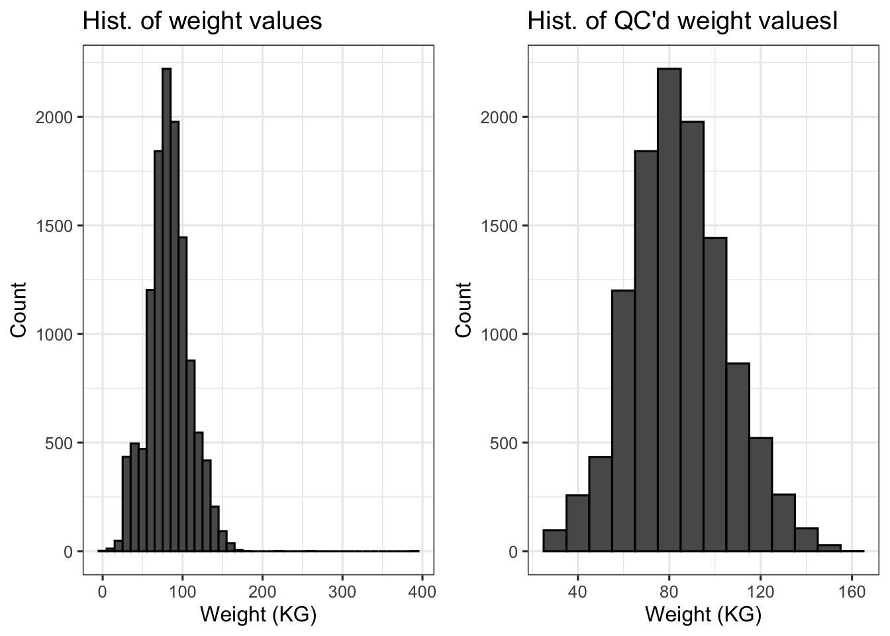

conda activate hpdm208z1 Introduction
In the previous workshop, you used multiple sources of health data to define disease status. In this workshop, you will use primary care (GP) data to obtain quantiative measures of a health-related outcome for further analysis.
2 Aims of workshop
- practice data wrangling
- quality control quantitative health-related variables captured through primary care (weight)
- formulate variables associated with longitudinal data for analysis
- test derived measures of weight fluctuation against disease status
- consider biases in the data and analyses performed
3 Conda environment
Before attempting this workshop, you should activate the hpdm208z conda environment that will provide the R through Jupyter Lab and required library dependencies:
4 Workshop data
The data for this workshop containing data on 1,000 individuals has been provided in a form that represents that available in UK Biobank (but is NOT UK Biobank data). The file can be found here:
/home/ubuntu/hpdm208z/workshops/disease_codes/weight_primary_care.txt
Within the dataset you will find the following variables:
| Field Name | Description |
|---|---|
id |
Unique study participant ID |
provider |
1:England(Vision), 2:Scotland, 3:England(TPP), 4:Wales |
date |
Date of record |
read_2 |
Read code (version 2) that maps to clinical terms |
read_3 |
Read code (version 3) that maps to clinical terms |
val1 |
Value associated with record |
val2 |
Value associated with record |
val3 |
Value associated with record |
In this workshop, we will be focussing on weight (kg) for which the read_v2 code and read_v3 code is 22A..
5 Load required R libraries for workshop
suppressPackageStartupMessages(library(ggplot2))
suppressPackageStartupMessages(library(gridExtra))
suppressPackageStartupMessages(library(stringr))
suppressPackageStartupMessages(library(dplyr))6 Activity 1: Data Wrangling
Your first task is to create a simplified tab-delimited file (with header) that looks like this:
| id | date | weight_kg |
|---|---|---|
| 1 | 2000-09-21 | 89.09 |
| 1 | 2004-03-11 | 104.00 |
| … | … | … |
We will create some some that will format the data and remove problematic records
6.1 Load in the data
Read in the data into a data frame called gp_data.
gp_data= read.table("weight_primary_care.txt", header=T, sep="\t", stringsAsFactors = F, na.strings = c("NA", ""))6.2 Remove records missing a date (=“None”) or numeric value
We will later want to sort each individual by their date when deriving measures of variability so we should only consider records with a date.
# use subset() function to remove records without a date
gp_data = subset(gp_data, date != "None")
# change column class type for date
gp_data$date = as.Date(gp_data$date)6.2.1 Convert columns to character type
This will make the next steps easier as we know from the outset the 3 columns are all of the character class
gp_data$val1 = as.character(gp_data$val1)
gp_data$val2 = as.character(gp_data$val2)
gp_data$val3 = as.character(gp_data$val3)6.2.2 Keep records with one numeric value > 0
Let’s create a data frame called gp_data_filtered to hold all records with one numerical value >0.
# Define which columns we will want to check for values >0
val_cols = c("val1", "val2", "val3")
# use dplyr to do this, applying filter to each row of the gp_records data frame
gp_data_filtered = gp_data %>%
rowwise() %>%
filter({
# convert to numerical values
vals <- suppressWarnings(as.numeric(c_across(c(val1, val2, val3))))
# Count how many numeric values are > 0
sum(vals > 0, na.rm = TRUE) == 1
}) %>%
# applying the ungroup() function is good practice to remove any grouping of data
ungroup()head(gp_data_filtered,10)View output
# A tibble: 10 × 8
id provider date read_2 read_3 val1 val2 val3
<int> <int> <date> <chr> <chr> <chr> <chr> <chr>
1 1 3 2000-09-21 <NA> 22A.. 89.09 <NA> <NA>
2 1 3 2004-03-11 <NA> 22A.. 104 <NA> <NA>
3 1 3 2005-02-21 <NA> 22A.. 73.18 <NA> <NA>
4 1 3 2005-04-18 <NA> 22A.. 88 <NA> <NA>
5 1 3 2005-10-17 <NA> 22A.. 88 <NA> <NA>
6 1 3 2006-08-01 <NA> 22A.. 95 <NA> <NA>
7 1 3 2006-08-09 <NA> 22A.. 95 <NA> <NA>
8 1 3 2006-11-03 <NA> 22A.. 100 <NA> <NA>
9 1 3 2007-02-27 <NA> 22A.. 100 <NA> <NA>
10 1 3 2007-11-05 <NA> 22A.. 100 <NA> <NA> 6.2.3 Check rows that would have been excluded
Let’s also check the behavior of the logic above is as expected for removing individuals by creating a data frame called gp_data_excluded to hold all excluded records.
gp_data_excluded = gp_data %>%
rowwise() %>%
filter({
# convert to numerical values
vals <- suppressWarnings(as.numeric(c_across(c(val1, val2, val3))))
# Count how many numeric values are > 0
sum(vals > 1, na.rm = TRUE) != 1
}) %>%
ungroup()head(gp_data_excluded,10)View output
# A tibble: 10 × 8
id provider date read_2 read_3 val1 val2 val3
<int> <int> <date> <chr> <chr> <chr> <chr> <chr>
1 26 2 2005-03-17 22A.. <NA> <NA> <NA> <NA>
2 26 2 2006-03-08 22A.. <NA> <NA> <NA> <NA>
3 26 2 2007-02-14 22A.. <NA> <NA> <NA> <NA>
4 26 2 2008-03-12 22A.. <NA> <NA> <NA> <NA>
5 26 2 2008-04-21 22A.. <NA> <NA> <NA> <NA>
6 26 2 2009-04-15 22A.. <NA> <NA> <NA> <NA>
7 26 2 2010-06-16 22A.. <NA> <NA> <NA> <NA>
8 27 3 2014-04-28 <NA> 22A.. 0 <NA> <NA>
9 32 2 2002-12-11 22A.. <NA> 76 <NA> 27.2
10 32 2 2004-02-05 22A.. <NA> 77 <NA> 26.6 6.2.4 Question
- Can you think of reasons why there may be more than one numerical weight value for some of records that were excluded?
6.3 Format the data so numerical values are in one column
The next step is to create a variable that holds the numerical value >0 found in either var1, var2 or var3 fields of the gp_data_filtered data frame. We will first convert the character fields to numeric so that any non-numeric values become NA. We will then use the coalesce() function which finds the first non-missing (numerical) value across the 3 fields. The mutate() function will allow us to create a new variable called weight in the data frame to store the value returned by the coalesce() function.
# Convert columns of val1, val2, val3 to numeric. Any non numerical values will be replaced with NA
gp_data_filtered$val1 = suppressWarnings(as.numeric(gp_data_filtered$val1))
gp_data_filtered$val2 = suppressWarnings(as.numeric(gp_data_filtered$val2))
gp_data_filtered$val3 = suppressWarnings(as.numeric(gp_data_filtered$val3))
# Create a column that contains the numerical value from across the 3 variables
# We will simply use the coalesce function to find the first non-missing value across the variables
gp_data_filtered <- gp_data_filtered %>%
mutate(weight = coalesce(val1, val2, val3))6.4 Resolve muliple weight records on same date
Multiple records associated with same read codes with assigned numerical values may appear on the same date. Values may be duplicated across such records or they may differ. We therefore need to resolve this.
A quick look at just one of the individuals (id=500) shows that some records occur on the same date as others.
head(subset(gp_data_filtered, id==500))View output
# A tibble: 6 × 9
id provider date read_2 read_3 val1 val2 val3 weight
<int> <int> <date> <chr> <chr> <dbl> <dbl> <dbl> <dbl>
1 500 2 2000-06-20 22A.. <NA> 105. NA NA 105.
2 500 2 2001-02-20 22A.. <NA> 95 NA NA 95
3 500 2 2001-02-20 22A.. <NA> 95 NA NA 95
4 500 2 2001-02-20 22A.. <NA> 95 NA NA 95
5 500 2 2001-02-20 22A.. <NA> 95 NA NA 95
6 500 2 2001-02-20 22A.. <NA> 95 NA NA 95 We therefore need a strategy should we employ to resolve multiple records for the same variable on the same date.
The approach we will take is to take the range (max value - min value) of numerical values assigned to weight and average the values if range < 2. Otherwise, remove records associated with the date.
weight_data <- gp_data_filtered %>%
group_by(id, date) %>%
summarise(
weight_range = max(weight, na.rm = TRUE) - min(weight, na.rm = TRUE),
avg_weight = mean(weight, na.rm = TRUE),
.groups = "drop"
) %>%
# Keep only groups where the range < 2
filter(weight_range < 2) %>%
# Keep only the columns you need
select(id, date, weight = avg_weight)We can look at specific examples to show that his has done what we have wanted.
Look at sample with id 96 and date 2013-02-21
data.frame(subset(gp_data_filtered, id==96 & date=="2013-02-21"))View output
id provider date read_2 read_3 val1 val2 val3 weight
1 96 3 2013-02-21 <NA> 22A.. 102 NA NA 102
2 96 3 2013-02-21 <NA> 22A.. 103 NA NA 103data.frame(subset(weight_data, id==96 & date=="2013-02-21"))View output
id date weight
1 96 2013-02-21 102.5# Rows removed from final data frameCheck we have removed records we would expect as outside of range.
Look at sample with id 38 and date 2007-06-27
data.frame(subset(gp_data_filtered, id==38 & date=="2007-06-27"))View output
id provider date read_2 read_3 val1 val2 val3 weight
1 38 3 2007-06-27 <NA> 22A.. 106 NA NA 106
2 38 3 2007-06-27 <NA> 22A.. 126 NA NA 126data.frame(subset(weight_data, id==38 & date=="2007-06-27"))View output
[1] id date weight
<0 rows> (or 0-length row.names)6.5 Question
- Do you have any suggestions as to how this strategy could be improved?
7 Activity 2: Quality Control
Although we have generated the weight_data dataframe from the primary care records, we still need to check whether the values for weight (kg) make sense. Even though this data is supposed to come from GP practices, mistakes are made on data entry.
7.1 Visualising the data
A helpful starting point is to visually examine the distribution of weight and check the values lie within ranges we would expect. If you are unsure what range to expect, it it useful to lookup a reference dataset to get an idea. For example, we could look at the distribution of weight measured in a reference dataset such as UK Biobank using their data showcase which provides the observed distribution of weight (kg) here. We can use this to get an idea of what we might expect assuming individuals in the reference dataset are representative of the individuals in our study. For example, based on UK Biobank, we wouldn’t necessarily expect an adult in our dataset to have weight measure of 10kg or be more than 200kg.
p1 =
weight_data |>
ggplot(aes(x = weight)) +
geom_histogram(binwidth = 10, colour = "black") +
labs(title = "Histogram of Weight Values from Primary Care Data", x = "Weight (KG)", y = "Count")
p2 =
weight_data |>
ggplot(aes(y=weight)) +
geom_boxplot() +
labs(title = "Boxplot of Weight Values from Primary Care Data", y = "Weight (KG)")
grid.arrange(p1,p2,ncol=1)
These plots immediately inform is that we have some extreme outlying values that we need to remove.
7.2 Summarizing the data
Next we can summarize the data numerically
weight_data %>%
summarise(
mean_weight = mean(weight, na.rm=TRUE),
sd_weight = sd(weight, na.rm=TRUE),
min_weight = min(weight, na.rm=TRUE),
max_weight = max(weight, na.rm=TRUE),
median_weight = median(weight, na.rm=TRUE)
)View output
# A tibble: 1 × 5
mean_weight sd_weight min_weight max_weight median_weight
<dbl> <dbl> <dbl> <dbl> <dbl>
1 83.5 25.6 1.05 394. 82.77.3 Adding in additional variables to assist QC
One reason why there may be excessive values <50 could be because BMI has been entered instead of weight and assigned to the read-code for weight (22A..) instead of being assigned to the read-code for BMI (22k..). Data entry errors do occur and so we should check whether this is a potential cause.
We will load in data on height, calculate the BMIs, and compare against a reference distribution. We will then filter BMI only on values <50. Again, we will use the UK Biobank showcase to obtain an distribution of BMI from a subset of the general population of the UK. Based on this distribution, we will keep weight values if the corresponding BMI value is 15 < BMI < 50. Although there may be some real BMI values outside of this range, they will be extreme outliers. For the purposes of this analysis we will exclude weights associated with extreme BMI
The formula for BMI is:
In the workshop data provided, we have measures of height (cm) from which we can calulate BMI. You may assume the height data has already been QC’d.
# Load in the height data
height_data = read.table("height.txt", header=T, stringsAsFactors = F, sep="\t")
# Merge to the weight_data DF
weight_data = merge(weight_data, height_data, by="id")Calculate BMI, remembering that height is in centimeters and BMI uses meters squared as the denominator:
weight_data$bmi = weight_data$weight / (weight_data$height_cm / 100)^2Lets first examine the distribution of BMI
p1 =
weight_data |>
ggplot(aes(x = bmi)) +
geom_histogram(binwidth = 10, colour = "black") +
labs(title = "Histogram of BMI Values", x = "BMI", y = "Count")
p2 =
weight_data |>
ggplot(aes(y=bmi)) +
geom_boxplot() +
labs(title = "Boxplot of BMI Values", x="", y = "BMI")
p3 =
weight_data |>
ggplot(aes(x=weight, y=bmi)) +
geom_point() +
labs(title = "Weight against calculated BMI", x="Weight", y = "BMI")
grid.arrange(p1,p2,p3,ncol=2)
Let’s keep individuals with 15 < BMI < 50 only
weight_data$weight_qc1 = ifelse(weight_data$bmi < 15 | weight_data$bmi > 50, NA, weight_data$weight)Let’s check our histogram again
p1 =
weight_data |>
ggplot(aes(x = weight)) +
geom_histogram(binwidth = 10, colour = "black") +
labs(title = "Hist. of weight values", x = "Weight (KG)", y = "Count")
p2 =
weight_data |>
ggplot(aes(x = weight_qc1)) +
geom_histogram(binwidth = 10, colour = "black") +
labs(title = "Hist. of QC'd weight valuesI", x = "Weight (KG)", y = "Count")
p3 =
weight_data |>
ggplot(aes(y=weight)) +
geom_boxplot() +
labs(title = "Boxplot of weight values", y = "Weight (KG)")
p4 =
weight_data |>
ggplot(aes(y=weight_qc1)) +
geom_boxplot() +
labs(title = "Boxplot of QC'd weight values", y = "Weight (KG)")
p5 =
weight_data |>
ggplot(aes(x=weight, y=bmi)) +
geom_point() +
labs(title = "Weight against BMI", x="Weight", y = "BMI")
p6 =
weight_data |>
ggplot(aes(x=weight_qc1, y=bmi)) +
geom_point() +
labs(title = "QC'd Weight against BMI", x="Weight", y = "BMI")
grid.arrange(p1,p2,ncol=2)Warning: Removed 1088 rows containing non-finite outside the scale range (`stat_bin()`).
grid.arrange(p3,p4,ncol=2)Warning: Removed 1088 rows containing non-finite outside the scale range (`stat_boxplot()`).
grid.arrange(p5,p6,ncol=2)Warning: Removed 1088 rows containing missing values or values outside the scale range (`geom_point()`).
weight_data %>%
summarise(
mean_weight = mean(weight_qc1, na.rm=TRUE),
sd_weight = sd(weight_qc1, na.rm=TRUE),
min_weight = min(weight_qc1, na.rm=TRUE),
max_weight = max(weight_qc1, na.rm=TRUE),
median_weight = median(weight_qc1, na.rm=TRUE)
)View output
mean_weight sd_weight min_weight max_weight median_weight
1 84.48181 21.06999 32 158.3 83We can see that the distribution of values <50 has flattened out, most likely due to BMI measures being incorrectly entered. We can also see that weight measures that would result in extreme BMI values have also been filtered out.
At this point we could accept the values that remain for subsequent analysis or we could perform additional QC - for example, a minimum value or 32 may seem unlikely but could be real. Ultimately, this decision, like others, are subjective that we hope lead to a sensible distribution - there is not a single “right” answer.
7.4 Removing outliers of remaining weight distribution
There are a number of ways in which we could remove outliers depending on the shape of the expected distribution of the variable. Arguably, there are two common approaches that are used for removing outliers from a distribution based on the distribution itself: parametric and non-parametric approaches.
7.4.1 Parametric approaches to removing extreme/outlying data points
Parametric approaches assume we know something about the underlying distibution of the data and the parameters associated with the distribution. For example, we may note that the data follows a normal distribution (otherwise known as Gaussan distribution) for which the parameters will include the mean and standard deviation (SD) and the data symmetrically distributed around the mean.
We could argue that most of the QC’d weight distribution looks “normal” with exception of some outlying values - so we may use a “parametric” approach to remove those outlying values. A common approach is to calculate the number of standard deviations from the mean a data point lies and remove data points further away than a set threshold. Common SD thresholds include >|3| or >|4| SDs. This choice is somewhat arbitary and depends on how inclusive we want to be.
Note, the number of SDs a data point is away from the mean is referred to as it’s z-score. We can obtain the z-scores of a variable by using the scale() function in R. So, if we wanted to create a variable that removed weight values greater than 3 SDs either side of the mean, we could run the following code:
weight_data$weight_qc2 = ifelse( scale(weight_data$weight_qc1) < -3 | scale(weight_data$weight_qc1) > 3, NA, weight_data$weight_qc1)We could then plot the distributions again:
p1 =
weight_data |>
ggplot(aes(x = weight_qc2)) +
geom_histogram(binwidth = 10, colour = "black") +
labs(title = "Histogram of Weight Values from Primary Care Data", x = "Weight (KG)", y = "Count")
p2 =
weight_data |>
ggplot(aes(y= weight_qc2)) +
geom_boxplot() +
labs(title = "Boxplot of Weight Values from Primary Care Data", y = "Weight (KG)")
grid.arrange(p1,p2,ncol=1)Warning: Removed 1110 rows containing non-finite outside the scale range (`stat_bin()`).Warning: Removed 1110 rows containing non-finite outside the scale range (`stat_boxplot()`).
weight_data %>%
summarise(
mean_weight = mean(weight_qc2, na.rm=TRUE),
sd_weight = sd(weight_qc2, na.rm=TRUE),
min_weight = min(weight_qc2, na.rm=TRUE),
max_weight = max(weight_qc2, na.rm=TRUE),
median_weight = median(weight_qc2, na.rm=TRUE)
)View output
mean_weight sd_weight min_weight max_weight median_weight
1 84.34975 20.87789 32 147 83As a results, we have taken out some data points at the higher end of the distribution but have not removed any potential outliers at the bottom of the distribution (e.g. weight=32kg).
7.4.2 Non-parameter approaches to outlying data points
Another approach we could take is to not make any real assumptions about the shape of the distribution and take a non-parametric approach. We will use the median (50th centile value) and inter-quartile range (75th centile (Q3) - 25th centile (Q1)) based on the to define outliers and remove them. We can used the `IQR() function to perform the calculate the inter-quartile range for us). Specifically, we will remove values if:
\(weight < median - 1.5IQR\)
or
\(weight > median + 1.5IQR\)
weight_data$weight_qc3 = ifelse( weight_data$weight_qc1 < median(weight_data$weight_qc1, na.rm = T) - (1.5*IQR(weight_data$weight_qc1, na.rm = T)) |
weight_data$weight_qc1 > median(weight_data$weight_qc1, na.rm = T) + (1.5*IQR(weight_data$weight_qc1, na.rm = T)),
NA, weight_data$weight_qc1)We could then plot the distributions again:
p1 =
weight_data |>
ggplot(aes(x = weight_qc3)) +
geom_histogram(binwidth = 10, colour = "black") +
labs(title = "Histogram of Weight Values from Primary Care Data", x = "Weight (KG)", y = "Count")
p2 =
weight_data |>
ggplot(aes(y=weight_qc3)) +
geom_boxplot() +
labs(title = "Boxplot of Weight Values from Primary Care Data", y = "Weight (KG)")
grid.arrange(p1,p2,ncol=1)Warning: Removed 1780 rows containing non-finite outside the scale range (`stat_bin()`).Warning: Removed 1780 rows containing non-finite outside the scale range (`stat_boxplot()`).
weight_data %>%
summarise(
mean_weight = mean(weight_qc3, na.rm=TRUE),
sd_weight = sd(weight_qc3, na.rm=TRUE),
min_weight = min(weight_qc3, na.rm=TRUE),
max_weight = max(weight_qc3, na.rm=TRUE),
median_weight = median(weight_qc3, na.rm=TRUE)
)View output
mean_weight sd_weight min_weight max_weight median_weight
1 83.65196 17.80868 41.7 124.3 837.4.3 Questions
- Do you notice any differences between using a parametric and non-parametric approach?
- Which approach would you take given the differences above and why?
8 Activity 3: Deriving measures of weight change
Now we have a QC’d version One health-related research question may be to look at the effects of weight change over time and how that might be associated with disease. Measures of within-individual variability commonly used in health-related research include standard deviation but also:
Coefficient of variation per individual
This is the mean divided by the standard deviation of the data points. This is an alternative to using SD where the units become standardized, whereas SD values are directly related to the scale of the variable (e.g. kg).
Formula:
where
\(s\) is the standard deviation
\(\bar{x}\) is the mean
Average successive variability per individual
This is the average of the absolute difference between consecutive data points over time.
Formula:
where
\(x_i\) is a data point \(x\) at time point \(i\)
\(n\) is the number of data points
8.2 Question
- What limitations do you think there are for deriving weight variability in this way?
9 Activity 4: Testing for an association between weight change and type 2 diabetes risk
One question we might ask is how changes in weight over time is associated with adverse health outcomes, such as disease.
One of the biggest risk factors for type 2 diabetes is obesity yet less is known about how fluctuation in weight over time may be associated with the disease.
You have been provided with a file named t2d_status.txt. Load this in, bind it to the data frame containing your estimate, and create a logistic model that tests for an association between your derived measure of weight variability.
# Load data in
t2d_status = read.table("t2d_status.txt", stringsAsFactors = F, header=T, sep="\t")
# Merge to data frame with variability measures
# insert code here
# Perform logistic regression model
# insert code here9.1 Questions
- Is there an association between weight variability and type 2 diabetes risk?
- What other predictors for type 2 diabetes might we want to additionally include in the model?
- Do you know how you might use a regression model to estimate effects of changes in predictor over time instead of deriving a variable with values that represent variability?